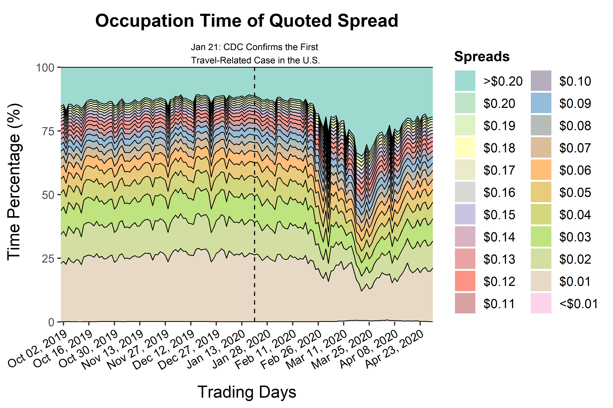
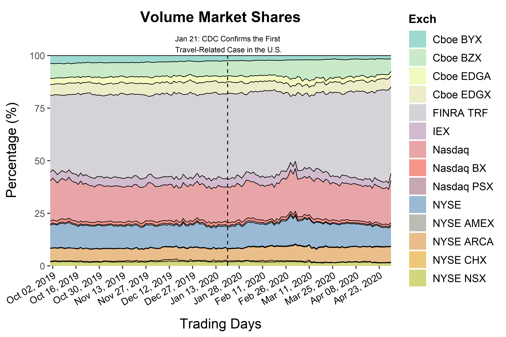

Big Data in Microstructure of the U.S. Stock Market
Quoted Spreads in the Covid-19 Era
The following draws a daily time-series of occupation times of quoted spread in October 2019 through April 2020.

Trading Volume Competition in the Covid-19 Era
The following draws a daily time-series of trading volume market shares in October 2019 through April 2020.

Detail of data processing
- The figures cover the stocks in the Russell 3000 index for two consecutive membership years of 2019-2020 and 2020-2021.
- For the regular trading hours (9:30 AM - 4:00 PM), quoted spreads are calculated at each update in the raw TAQ quote data with the filtering rules of Holden and Jacobsen (2014) in place (see their SAS code). After that, occupation times of quoted spread at 22 levels are computed stock-by-stock day-by-day, and cross-sectional averages are taken on each of the 22 levels on each day. (Note: the stocks priced below $1.00 can have quoted spreads less than one penny)
- For the regular trading hours excluding the first five and last five minutes (9:35 AM - 3:55 PM), trading volume executed on 13 national exchanges or reported via FINRA TRF are computed stock-by-stock day-by-day, and market shares of share trading volumes are calculated on each day. (Note: the first and last five minutes are excluded to avoid the impact of opening and closing auctions)
© 2021 Hyungil Kye. All rights reserved.